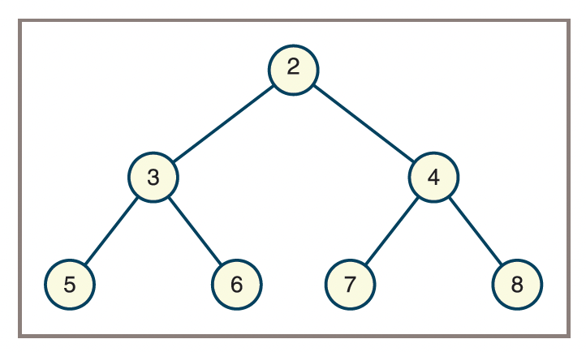
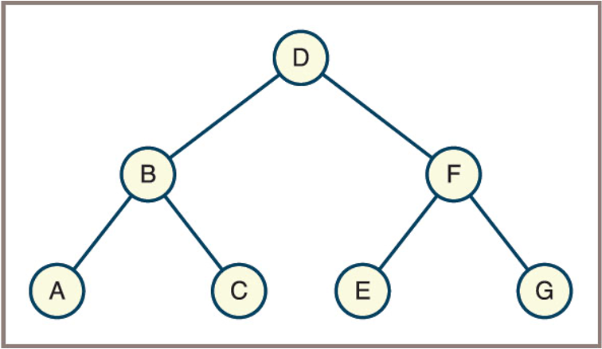
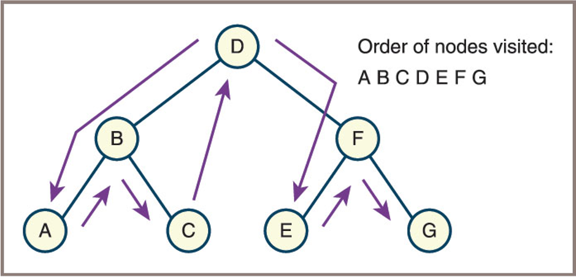
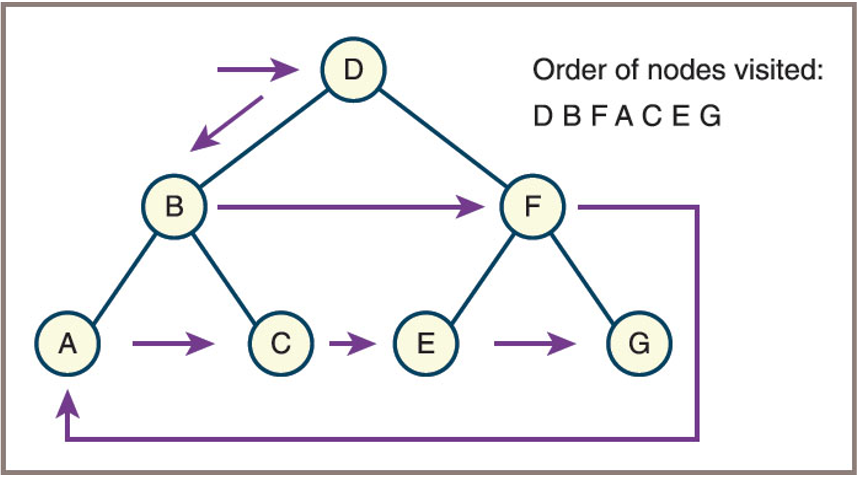

TREES STRUCTURE
Fred Agbo
2025-10-29
Announcements
- Welcome!
- We will introduce one of the hierarchical collections -
Trees- Readings:
- FDS - Lambert: Chapter 10
- DS&A - John et al.: Chapter 8, 9
- Readings:
- Problem set 4 is posted and due next week Monday November 3
Learning Objectives
- Describe the features of a tree
- Describe various types of tree traversals
- Recognize three common applications where it is appropriate to use a tree
- Describe the features of a binary search tree and the operations on it
- Recognize the three common applications where it is appropriate to use a binary search tree
- Describe the features of an expression tree and the operations on it
- Use an expression tree in recursive descent parsing
- Describe the features of a heap and the operations on it
- Provide a complexity analysis of the heap sort
An Overview of Trees
- A tree is a hierarchical data structure consisting of items called
nodes, with a single node designated as the root. - Ideas of
predecessorandsuccessorare replaced withparentandchild - Each node may have zero or more child nodes.
- There are no cycles; each child has exactly one parent (except the root, which has none).
Tree Terminology
- Summary of terms Used to describe Trees
| Term | Definition |
|---|---|
| Node | An item stored in a tree |
| Root | The topmost node in a tree (only node without a parent) |
| Child | A node immediately below and directly connected to a given node |
| Parent | A node immediately above and directly connected to a given node |
| Siblings | The children of a common parent |
| Leaf | A node that has no children |
| Interior node | A node that has at least one child |
| Edge/Branch/Link | The line that connects a parent to its child |
Tree Terminology (cont.)
- Summary of terms Used to describe Trees
| Term | Definition |
|---|---|
| Descendant | A node’s children, its children’s children, and so on |
| Ancestor | A node’s parent, its parent’s parent, and so on |
| Path | The sequence of edges that connect a node and one of its descendants |
| Path length | The number of edges in a path |
| Depth or level | Equals the length of the path connecting it to the root |
| Height | The length of the longest path in the tree |
| Subtree | The tree formed by considering a node and all its descendants |
Tree Terminology (example)

General Trees and Binary Trees
- General tree
- Above is an example of a general Tree
- Binary tree
- Each node has at most two children
- Children are referred to as the left child and the right child
General Trees and Binary Trees

- Two unequal binary trees that have the same sets of nodes shown here
- Are not the same when they are considered
binarytrees - Are the same when they are considered
generaltrees
- Are not the same when they are considered
Recursive Definitions of Trees
- General tree
A general tree is either empty or consists of a finite set of nodes \(T\).- One node \(r\) is distinguished from all others and is called the root.
- The set \(T - \{r\}\) is partitioned into disjoint subsets, each of which is itself a general tree.
- Binary tree
A binary tree is either empty or consists of a root plus a left subtree and a right subtree, each of which is a binary tree.
Check!

- From the tree above:
- What are the leaf nodes in the tree?
- What are the interior nodes in the tree?
- What are the siblings of node 7?
- What is the height of the tree?
- How many nodes are in level 2?
- Is the tree a general tree, a binary tree, or both?
Why Use a Tree?
- Trees nicely represent hierarchical structures
- Parse tree
- Describes the syntactic structure of a sentence in terms of its components
- Such as noun phrases and verb phrases
- See Figure on the next slide
- File system structures are also tree-like
Why Use a Tree: Parse Tree

- A parse tree for a sentence The girl hit the ball with a bat
Why Use a Tree: File System

- A file system structure indicating
Das directory (now folder) andFas file
Why Use a Tree: Binary Sorted
- A binary representation of a sorted collection that contains the letters A through G (Also called Binary Search Tree - BST)
The Shape of Binary Trees
- Trees as data structures come in various shapes and sizes
- Some are vine-like and some are bushy
- The shape of a binary tree can be described by specifying the relationship between its height and the number of nodes it contains
- A binary tree can be vine-like with
Nnodes and a height ofN − 1 - A full binary tree contains the full complement of nodes at each level
- A binary tree can be vine-like with
The Shape of Binary Trees

- A vine-like tree is a binary tree where each node has at most one child, resulting in a structure similar to a linked list (maximum height, minimum bushiness).
- A bushy tree is a binary tree where nodes have two children as often as possible, resulting in a more balanced and compact structure (minimum height, maximum bushiness).
The Shape of Binary Trees
- The Relationship Between the
Heightand theNumberofNodesin Full Binary Tree
| Height (h) | Minimum Nodes | Maximum Nodes (Full Binary Tree) |
|---|---|---|
| 0 | 1 | 1 |
| 1 | 2 | 3 |
| 2 | 3 | 7 |
| 3 | 4 | 15 |
| h | h + 1 | 2^(h+1) - 1 |
- In a full binary tree of height
h, the maximum number of nodes is2^(h+1) - 1. - The minimum number of nodes in a binary tree of height
hish + 1(vine-like tree).
The Shape of Binary Trees
- Not all bushy trees are full binary trees
- However, a perfectly balanced binary tree, is bushy enough to support worst-case logarithmic access to leaf nodes
- A complete binary tree, in which any nodes on the last level are filled in from left to right, is, like a full binary tree
- A special case of a perfectly balanced binary tree
The Shape of Binary Trees

- Four types of shapes of binary trees
Binary Tree Traversals
- Four standard types of traversals for binary trees:
- Preorder
- Inorder
- Postorder
- Level order
- Each type follows a particular path and direction as it visits the nodes in the tree
Binary Tree: Preorder Traversals
Preorder traversal visits nodes in the following order:
- Visit the root node.
- Traverse the left subtree in preorder.
- Traverse the right subtree in preorder.
Pseudocode:
Binary Tree: Preorder Traversals
- Example:
For the tree below, the preorder traversal order is: D, B, A, C, F, E, G
Binary Tree: Inorder Traversals
- Inorder traversal visits nodes in the following order:
- Traverse the left subtree in inorder.
- Visit the root node.
- Traverse the right subtree in inorder.
- Pseudocode:
Binary Tree: Inorder Traversals
Example:
For the tree below, the inorder traversal order is: A, B, C, D, E, F, G
Binary Tree: Postorder Traversals
- Postorder traversal visits nodes in the following order:
- Traverse the left subtree in postorder.
- Traverse the right subtree in postorder.
- Visit the root node.
- Pseudocode:
Binary Tree: Postorder Traversals
Example:
For the tree below, the postorder traversal order is: A, C, B, E, G, F, D

Binary Tree: Level Order Traversals
Level order traversal visits nodes level by level from top to bottom and left to right within each level.
This traversal uses a queue data structure.
Pseudocode:
Binary Tree: Level Order Traversals
Example:
For the tree below, the level order traversal order is: D, B, F, A, C, E, G